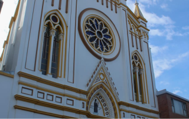
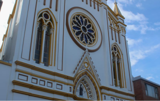

De Chiquinquirá
El Monasterio de las Clarisas en Chiquinquirá, fundado en el siglo XX, surgió gracias al fervor religioso hacia la Virgen de Chiquinquirá y la misión de las monjas de vivir en oración y contemplación. Siguiendo los principios de Santa Clara de Asís, las hermanas llevan una vida de clausura, dedicadas a la oración por la comunidad y actividades artesanales que sostienen el monasterio. Este lugar se ha convertido en un símbolo de paz y devoción en Chiquinquirá,

¡Deseas obtener más información del lugar!

Domingo
08:30 AM - 12:00 PM
Lunes a Sabado
08:00 AM - 12:00 PM Y 02:00 PM - 05:00 PM

 

Dirección
Cra. 9 #14-101, Chiquinquirá, Boyacá
Contacto
(098) 726 2644- (314) 413 4413